This report compares the popularity baseline, content-based recommender, and hybrid career-aware recommender using the sample learner profiles and prototype relevance judgements.
These findings are generated from the validated source CSVs. Pathway relevance counts overlap because one resource can support multiple pathways.
| Analysis | Finding | Implication |
|---|---|---|
| Pathway relevance coverage overlaps substantially | Machine Learning Engineer has 84 resources with positive relevance, while Data Analyst has 55. Counts overlap because one resource may support several pathways. | Pathway-level model results should be interpreted alongside catalogue coverage rather than assuming equal candidate pools. |
| The catalogue is concentrated in three providers | DataCamp contributes 24 of 96 resources (25.0%). The top three providers contribute 57 (59.4%). | Later diversity analysis should check whether recommendations amplify this source concentration. |
| Courses dominate the available formats | Course is the largest format with 41 resources (42.7%). | Format-diversity results will partly reflect catalogue composition, not only recommender preference. |
| Advanced resources are the smallest difficulty group | The catalogue contains 34 beginner, 47 intermediate, and 15 advanced resources. | Advanced learners have a smaller candidate pool, which may constrain difficulty matching. |
| Most resources are short or medium length | The largest duration band is >2-5 hours with 42 resources (43.8%). | The catalogue broadly supports the project's targeted next-step approach, while long tracks remain a minority. |
| Free and paid resources are nearly balanced | The catalogue contains 47 free and 49 paid resources. | Cost availability is balanced at catalogue level, although cost is not yet a learner preference in the ranking model. |
| Skill representation is uneven | Python appears in 35 resources, while the least represented skill group (Excel) appears in 3. | Low-frequency skills may receive fewer suitable recommendations and need explicit coverage checks. |
| Some skills are commonly taught together | The most frequent pair is Machine Learning with Model Evaluation, appearing in 19 resources. | Co-occurrence can help explain multi-skill recommendations but may also make rare standalone skills harder to retrieve. |
| Every required pathway skill has catalogue coverage | No required pathway-skill cell has zero matching resources. 1 cell has fewer than three resources. | The skill map is usable for recommendation, but thin cells should be reviewed during pathway-level error analysis. |
| Evaluation profiles are almost balanced by pathway | Data Analyst has three profiles; each of the other four pathways has two. | Macro results are not dominated by a large profile group, but 11 profiles remain too few for strong generalisation. |
| Relevant-set sizes vary across profiles | Relevant sets range from 16 to 29 resources, with a mean of 23.5. | Recall@K should be interpreted with relevant-set size, and later evaluation should retain profile-level results. |
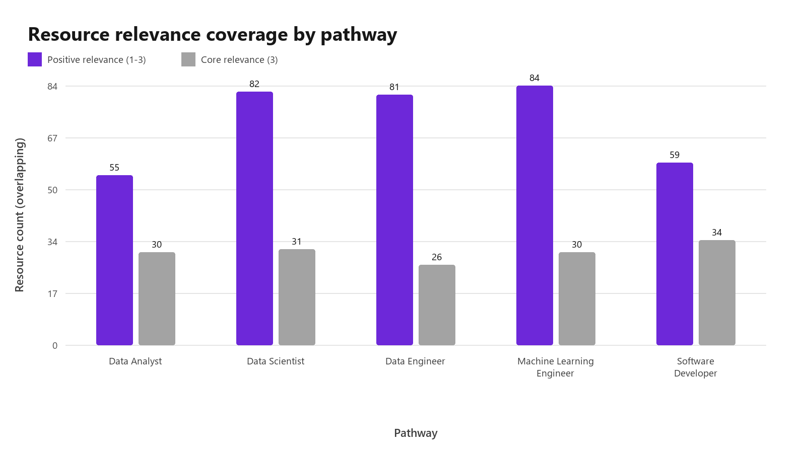
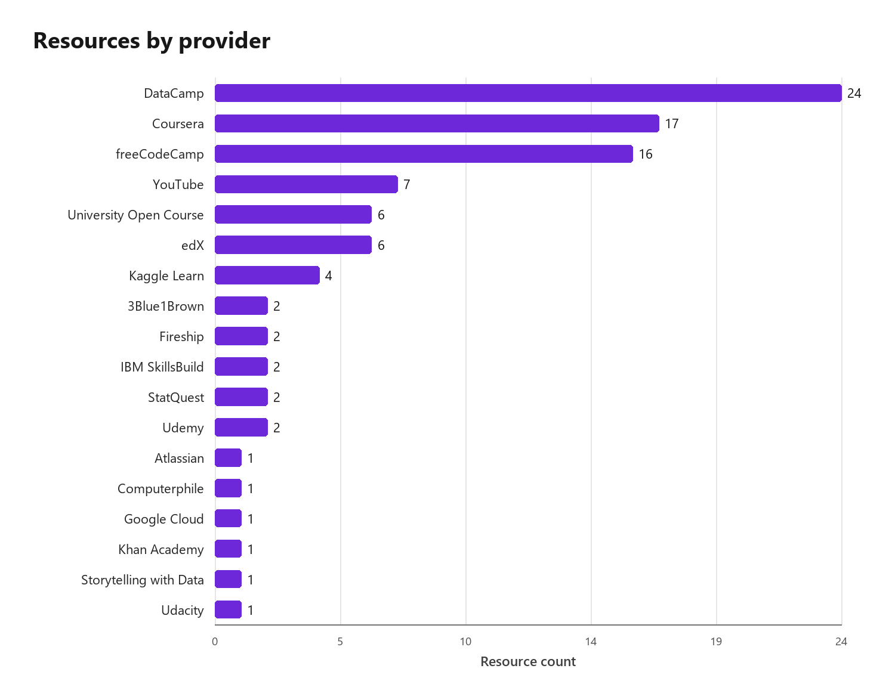
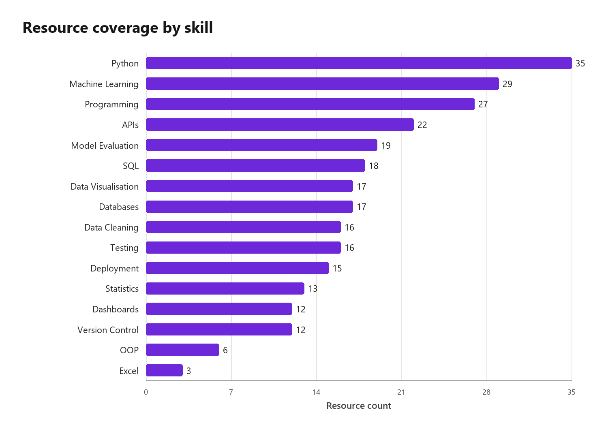
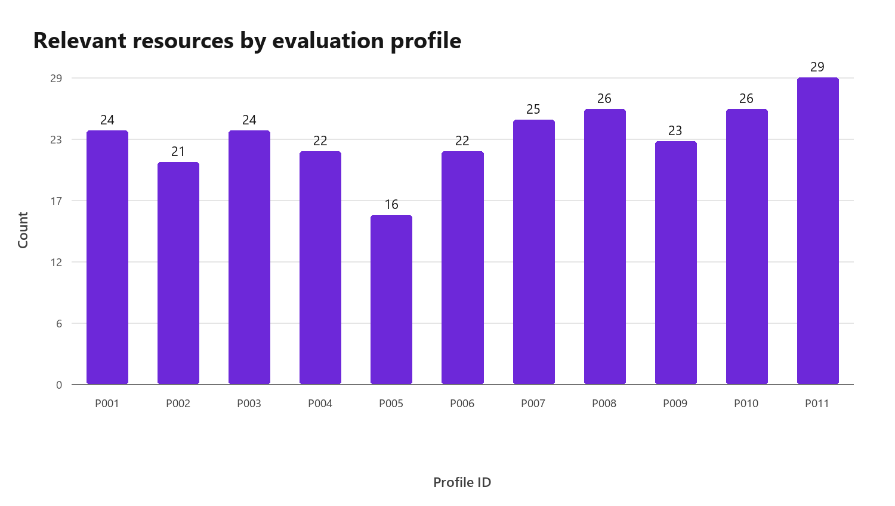
| Model | Precision@K | Recall@K | NDCG@K |
|---|---|---|---|
| popularity | 0.3091 | 0.0646 | 0.3116 |
| content_based | 0.8364 | 0.1835 | 0.8531 |
| hybrid | 0.9455 | 0.2077 | 0.954 |
Metrics are traced to profile and pathway rows at K=3, 5, and 10. Seeded bootstrap intervals describe variation across the 11 curated profiles, not the real learner population.
| Analysis | Finding | Implication |
|---|---|---|
| The hybrid remains the strongest model at K=5 | Hybrid has the highest macro NDCG@5 at 0.9540. | The structured career and skill-gap signals remain useful when performance is traced to profile-level observations. |
| The overall estimate still has profile-level uncertainty | Hybrid NDCG@5 has a seeded profile-bootstrap 95% interval of [0.8885, 1.0000]. | The interval describes variation within 11 curated profiles, not uncertainty for the real learner population. |
| Pathway performance is not uniform | The lowest hybrid pathway NDCG@5 is Data Engineer at 0.7469; Content-based scores 0.8930 for the same pathway. | Pathway-level error analysis is needed before treating the overall average as equally representative of every pathway. |
| The hybrid covers only part of the full catalogue | Across all profiles at K=5, hybrid recommendations expose 33 of 96 resources (34.4%). | Coverage should be interpreted alongside the deliberate exclusion of broad tracks and supporting-only formats from ranked next steps. |
| Suitability diagnostics provide a second evaluation layer | At K=5 the hybrid averages 61.3% skill-gap coverage, 100.0% difficulty matching, and 90.9% prerequisite validity. | High relevance metrics should only be accepted when recommendations also address learner gaps and remain teachable. |
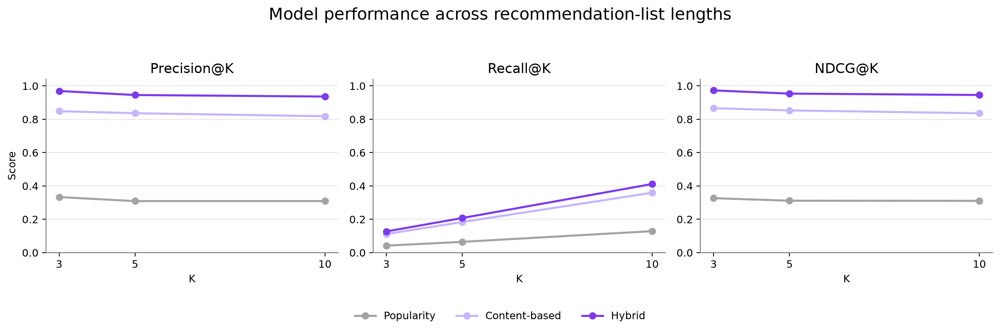
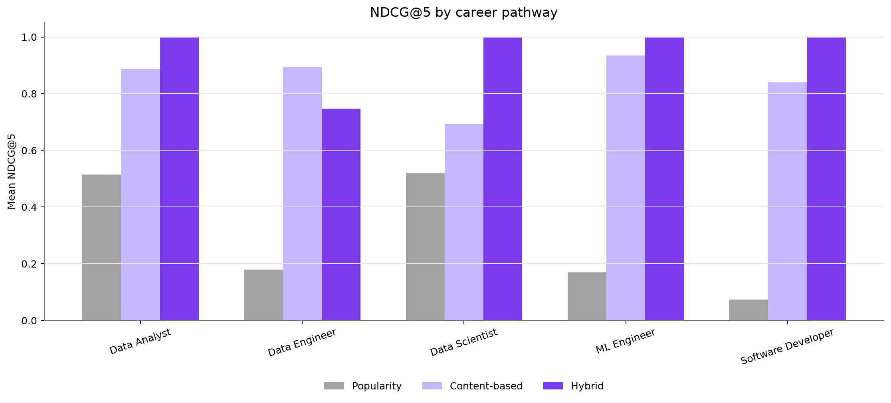
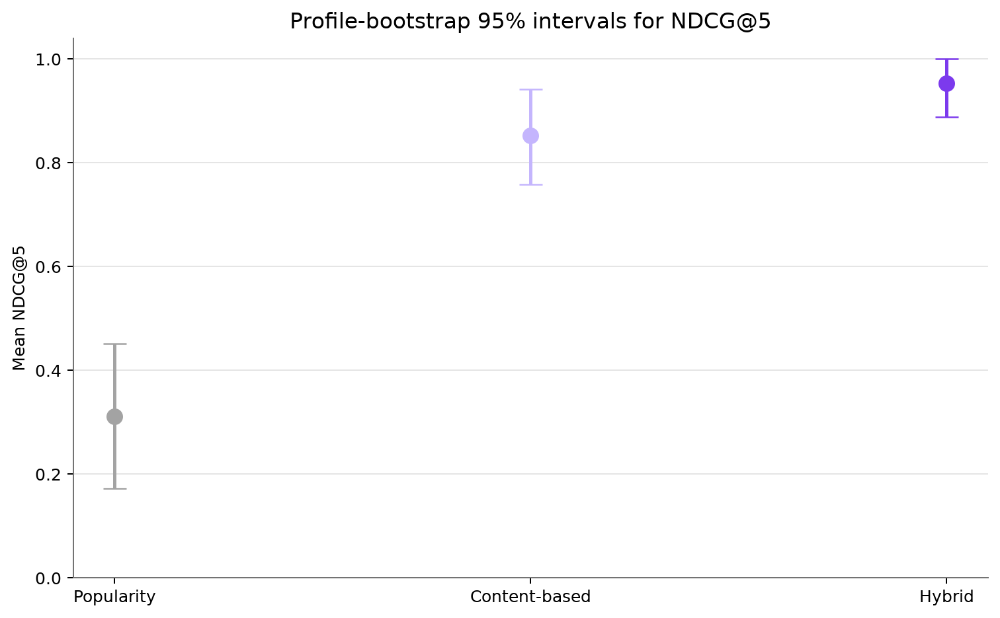
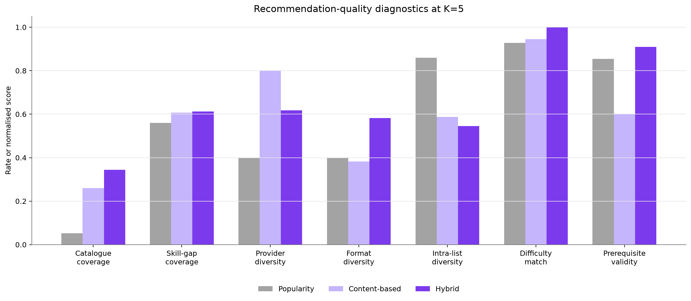
| Model | K | Profiles | Precision@K | Recall@K | NDCG@K |
|---|---|---|---|---|---|
| popularity | 3 | 11 | 0.3333 | 0.0419 | 0.3266 |
| popularity | 5 | 11 | 0.3091 | 0.0646 | 0.3116 |
| popularity | 10 | 11 | 0.3091 | 0.1288 | 0.3104 |
| content_based | 3 | 11 | 0.8485 | 0.1118 | 0.8664 |
| content_based | 5 | 11 | 0.8364 | 0.1835 | 0.8531 |
| content_based | 10 | 11 | 0.8182 | 0.3593 | 0.8361 |
| hybrid | 3 | 11 | 0.9697 | 0.1272 | 0.9731 |
| hybrid | 5 | 11 | 0.9455 | 0.2077 | 0.954 |
| hybrid | 10 | 11 | 0.9364 | 0.4116 | 0.9457 |
The ablations and weight variants below are diagnostic experiments against the unchanged baseline. No variant is selected or written back into the recommender.
| Analysis | Finding | Implication |
|---|---|---|
| Ablation identifies which hybrid signals carry the ranking | Removing Career Relevance changes NDCG@5 by -0.0295, the largest decrease among single-component removals. | This component contributes the strongest unique ranking evidence on the current curated profiles. |
| Some component removal may improve the same test set | The largest ablation increase is +0.0173 when Job Skill Alignment is removed. For Data Engineer profile P010, NDCG@5 changes from 0.6399 to 0.8304. | This is diagnostic evidence, not permission to retune on the evaluation profiles; a change needs held-out confirmation. |
| One-at-a-time sensitivity measures local stability | Prerequisite Match has the widest NDCG@5 range (0.0133) across 0.5x to 1.5x its current weight. | Large local variation would indicate a fragile manual weight; small variation indicates stable rankings near the chosen value. |
| Seeded alternatives test robustness without tuning | Twelve pre-seeded configurations produce NDCG@5 values from 0.9421 to 0.9553. | The range describes sensitivity to bounded joint perturbations; the best variant is not selected as a replacement model. |
| Failure cases point to model changes before data expansion | 5 prerequisite-invalid top-five recommendations affect 2 profiles; the complete failure log contains 17 flagged cases. | A hard eligibility or sequencing rule can be evaluated before assuming that additional catalogue rows are the primary remedy. |
| The current evidence supports a model-first data decision | All source rows remain valid, the strongest controlled improvement comes from a scoring-component change, and prerequisite failures come from soft ranking rather than broken data references. | Keep the current dataset as the experimental baseline, evaluate hard prerequisite eligibility and independently review labels, then create a documented data revision only if residual errors show a genuine catalogue or labelling gap. |
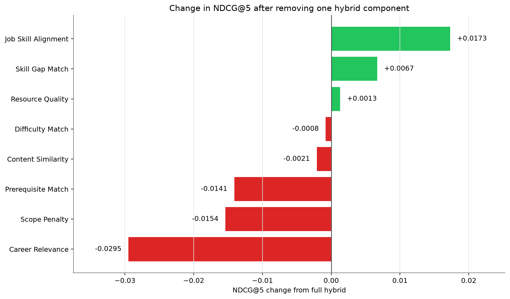
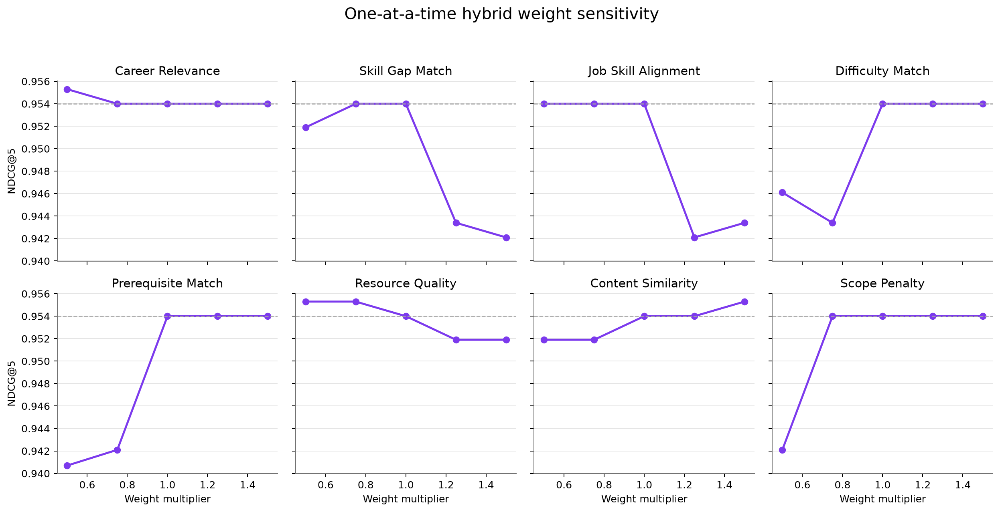
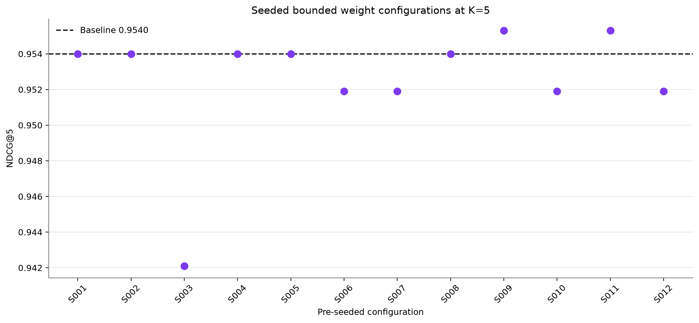
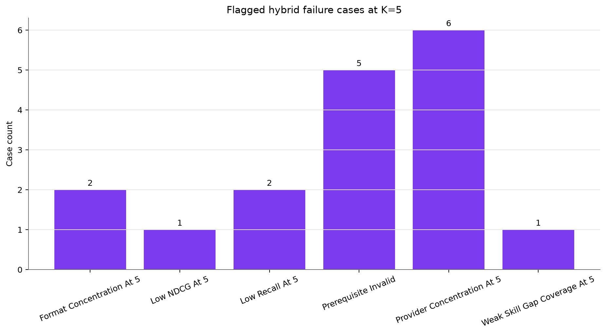
Differences are paired within the same 11 curated profiles. Exact sign-flip tests are primary, signed-rank tests are a sensitivity check, and Holm correction covers all 18 planned comparisons. These results do not establish population-wide superiority.
| Analysis | Finding | Implication |
|---|---|---|
| Paired differences quantify the hybrid advantage | At K=5, hybrid minus content-based NDCG averages +0.1009 with 95% interval [-0.0069, +0.2172], while the Holm-adjusted exact permutation p-value is 0.656250. | The positive mean is suggestive on this test set, but it is not corrected statistical evidence that hybrid outperforms content-based. |
| The popularity comparison is practically large | At K=5, hybrid minus popularity NDCG averages +0.6424 with paired standardized effect dz=2.4851 and Holm-adjusted exact permutation p=0.017578. | Practical magnitude is reported alongside p-values rather than treating statistical significance as the only evidence. |
| Corrected tests separate the two baseline conclusions | 9 of 18 planned hybrid-baseline comparisons have Holm-adjusted exact permutation p<0.05: 9 of 9 against popularity and 0 of 9 against content-based. | Only corrected results can support statistical claims; all conclusions remain limited to 11 curated profiles. |
| Win, tie, and loss counts expose consistency | For NDCG@5, hybrid records 5 wins, 4 ties, and 2 losses against content-based. | The counts show whether an average difference is widespread or driven by a small number of profiles. |
| A blinded label audit is prepared but not fabricated | A deterministic 40-item audit template contains 8 cases per pathway and spans all four planned case types. 7 balanced fallback cases were needed because recommended-but-currently-non-relevant cases were not numerous enough for a perfect two-per-type split in every pathway. Reviewer fields are blank and the current-label key is stored separately. | An independent reviewer can assess label consistency without seeing model scores or the current labels. |
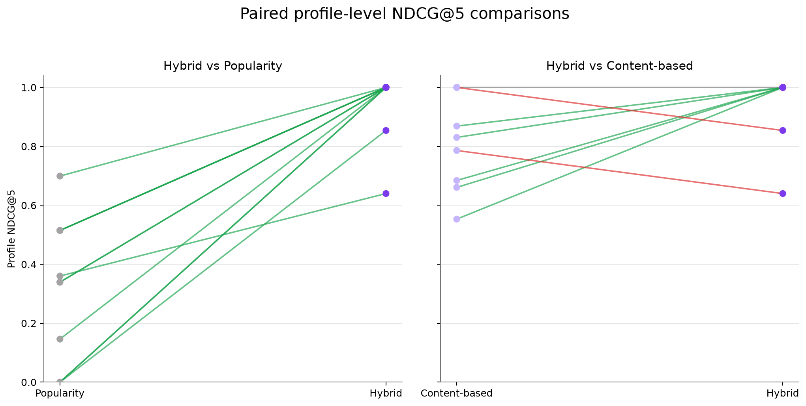
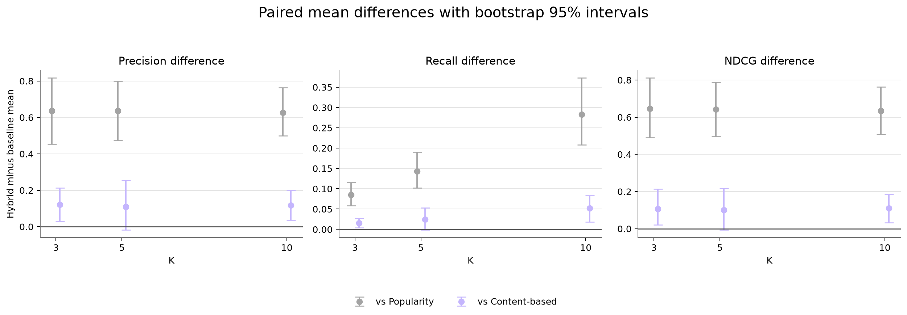
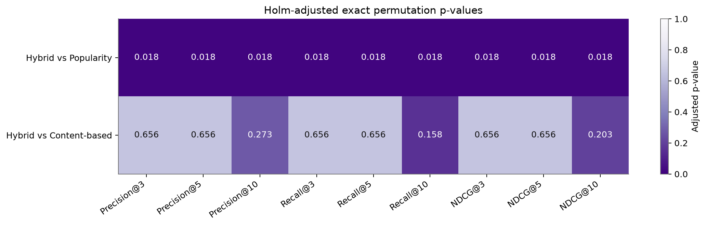
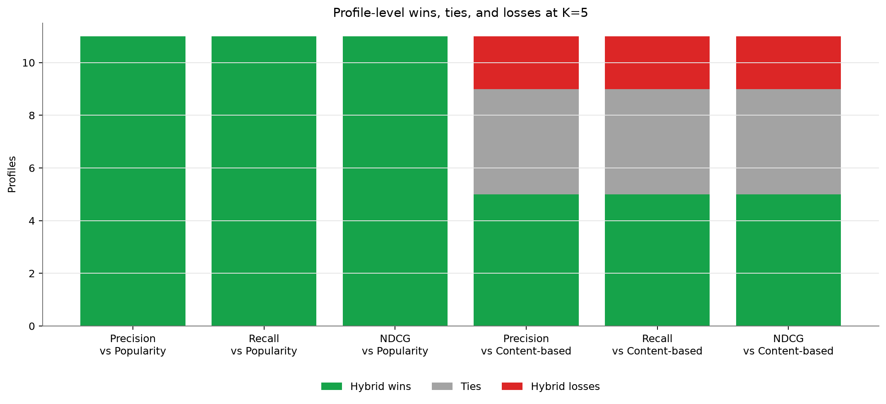
This diagnostic variant changes only candidate eligibility. Source data, relevance labels, hybrid weights, and the baseline remain unchanged, and the result does not automatically replace the production model.
| Analysis | Finding | Implication |
|---|---|---|
| Hard eligibility removes prerequisite-invalid recommendations | Mean prerequisite validity at K=5 changes from 90.9% to 100.0%. | The candidate-level rule directly addresses the diagnosed suitability failure while preserving a full top-10 list. |
| The primary ranking effect is measured rather than assumed | Hard eligibility minus baseline NDCG@5 averages +0.0000 with 95% interval [+0.0000, +0.0000], 0 wins, 11 ties, 0 losses, and Holm-adjusted exact p=1.000000. | Suitability and relevance are reported together; neither one is treated as sufficient by itself. |
| Profile changes expose who is affected | 6 of 11 profile top-10 rankings change. Top-five resource identities change for 2 profiles (P003, P008). Profiles with lower NDCG@5 are none. | The aggregate result is traceable to explicit removed and replacement resources for every profile. |
| Pathway effects remain descriptive | The lowest pathway NDCG@5 change is data_analyst at +0.0000. | Only two or three profiles represent each pathway, so this diagnostic cannot support pathway-wide generalisation. |
| Longer lists and quality diagnostics show small trade-offs | At K=10, NDCG changes from 0.9457 to 0.9455. At K=5, skill-gap coverage changes from 0.6126 to 0.5956, while catalogue coverage changes from 0.3438 to 0.3854. | The hard rule improves eligibility and broader exposure, but slightly reduces measured skill-gap coverage at K=5; this trade-off should be reviewed rather than hidden. |
| The baseline remains frozen | The experiment changes only candidate eligibility. Source data, relevance labels, hybrid weights, and baseline outputs remain unchanged. | The result can inform a later implementation decision, but does not automatically replace the production hybrid. |
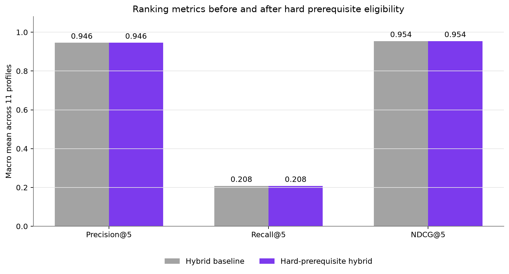
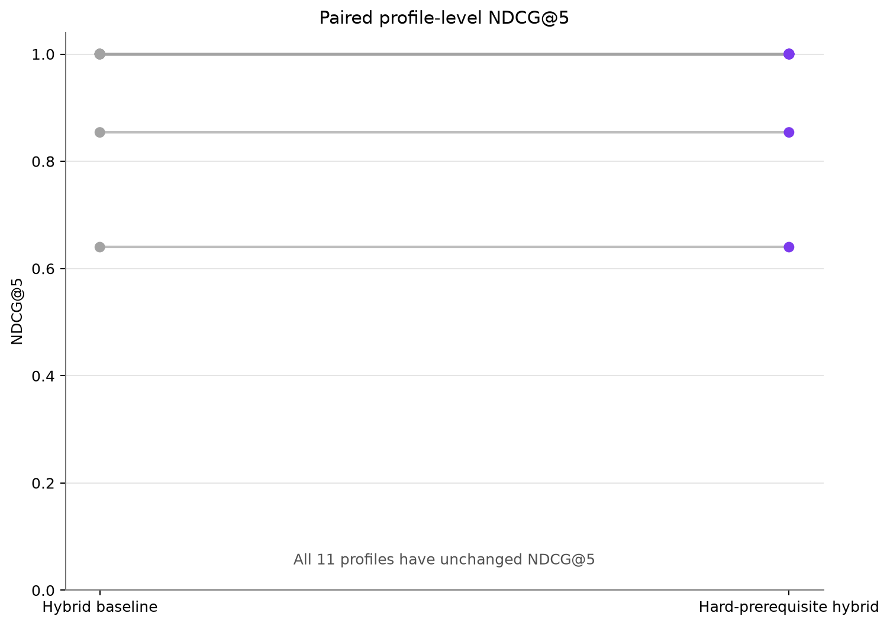
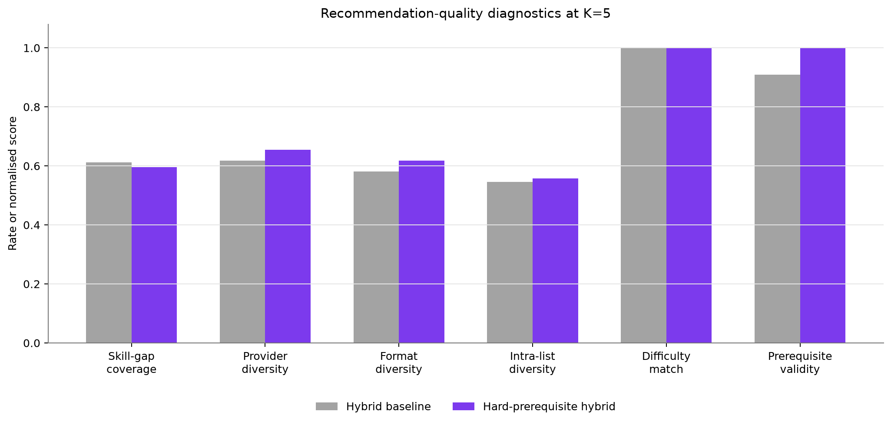
| Rank | Resource | Provider | Score | Explanation |
|---|---|---|---|---|
| 1 | Google Data Analytics Foundations | Coursera | 0.729 | Recommended because it targets skill gaps in data_visualisation, sql, data_cleaning; its difficulty matches the learner's current level; the learner appears to meet the prerequisites. |
| 2 | Power BI Dashboard Basics | DataCamp | 0.6806 | Recommended because it targets skill gaps in data_visualisation, dashboards, data_cleaning; its difficulty matches the learner's current level; the learner appears to meet the prerequisites. |
| 3 | Excel Skills for Business | Coursera | 0.6655 | Recommended because it targets skill gaps in dashboards, data_cleaning, excel; its difficulty matches the learner's current level; the learner appears to meet the prerequisites. |
| 4 | Exploratory Data Analysis in Python | Kaggle Learn | 0.6582 | Recommended because it targets skill gaps in data_visualisation, statistics, data_cleaning; the learner appears to meet the prerequisites. |
| 5 | SQL for Data Analysis | Coursera | 0.6455 | Recommended because it targets skill gaps in sql, data_cleaning; its difficulty matches the learner's current level; the learner appears to meet the prerequisites. |
| Rank | Resource | Provider | Score | Explanation |
|---|---|---|---|---|
| 1 | MLOps Fundamentals | DataCamp | 0.6649 | Recommended because it targets skill gaps in deployment, model_evaluation, machine_learning; the learner appears to meet the prerequisites. |
| 2 | Flask for Model Serving | Coursera | 0.6619 | Recommended because it targets skill gaps in deployment, machine_learning, apis; its difficulty matches the learner's current level; the learner appears to meet the prerequisites. |
| 3 | Practical Feature Engineering | Kaggle Learn | 0.6618 | Recommended because it targets skill gaps in model_evaluation, machine_learning, data_cleaning; its difficulty matches the learner's current level; the learner appears to meet the prerequisites. |
| 4 | Mini Project Customer Churn Model | Kaggle Learn | 0.6616 | Recommended because it targets skill gaps in model_evaluation, machine_learning, data_cleaning; its difficulty matches the learner's current level; the learner appears to meet the prerequisites. |
| 5 | Feature Selection and Validation | Kaggle Learn | 0.6545 | Recommended because it targets skill gaps in model_evaluation, machine_learning, python; its difficulty matches the learner's current level; the learner appears to meet the prerequisites. |
| Rank | Resource | Provider | Score | Explanation |
|---|---|---|---|---|
| 1 | Build a REST API Project | YouTube | 0.7135 | Recommended because it targets skill gaps in apis, testing, databases; its difficulty matches the learner's current level; the learner appears to meet the prerequisites. |
| 2 | Software Engineering Principles | edX | 0.7108 | Recommended because it targets skill gaps in testing, oop, version_control; its difficulty matches the learner's current level; the learner appears to meet the prerequisites. |
| 3 | freeCodeCamp Module Quality Assurance Testing | freeCodeCamp | 0.6795 | Recommended because it targets skill gaps in apis, testing, programming; its difficulty matches the learner's current level; the learner appears to meet the prerequisites. |
| 4 | Mini Project Build a Tested REST API | freeCodeCamp | 0.6696 | Recommended because it targets skill gaps in apis, testing, databases; its difficulty matches the learner's current level. |
| 5 | Database Clients and ORM Basics | Coursera | 0.6442 | Recommended because it targets skill gaps in apis, databases, sql; its difficulty matches the learner's current level. |
| Rank | Resource | Provider | Score | Explanation |
|---|---|---|---|---|
| 1 | Google Data Analytics Foundations | Coursera | 0.707 | Recommended because it targets skill gaps in data_cleaning, data_visualisation, sql; its difficulty matches the learner's current level; the learner appears to meet the prerequisites. |
| 2 | Excel Skills for Business | Coursera | 0.685 | Recommended because it targets skill gaps in dashboards, data_cleaning, excel; its difficulty matches the learner's current level; the learner appears to meet the prerequisites. |
| 3 | Power BI Dashboard Basics | DataCamp | 0.6843 | Recommended because it targets skill gaps in dashboards, data_cleaning, data_visualisation; its difficulty matches the learner's current level; the learner appears to meet the prerequisites. |
| 4 | Mini Project Build an Interactive Dashboard | DataCamp | 0.6786 | Recommended because it targets skill gaps in dashboards, data_cleaning, data_visualisation; its difficulty matches the learner's current level; the learner appears to meet the prerequisites. |
| 5 | Mini Project Analyse Sales Data with SQL | Coursera | 0.6678 | Recommended because it targets skill gaps in data_cleaning, sql, statistics; its difficulty matches the learner's current level; the learner appears to meet the prerequisites. |
| Rank | Resource | Provider | Score | Explanation |
|---|---|---|---|---|
| 1 | MLOps Fundamentals | DataCamp | 0.6953 | Recommended because it targets skill gaps in deployment, model_evaluation, machine_learning; its difficulty matches the learner's current level; the learner appears to meet the prerequisites. |
| 2 | Machine Learning Pipelines | Coursera | 0.6728 | Recommended because it targets skill gaps in deployment, model_evaluation, machine_learning; its difficulty matches the learner's current level; the learner appears to meet the prerequisites. |
| 3 | MLflow Experiment Tracking | DataCamp | 0.6644 | Recommended because it targets skill gaps in deployment, model_evaluation, machine_learning; its difficulty matches the learner's current level; the learner appears to meet the prerequisites. |
| 4 | DataCamp Module ML API Deployment | DataCamp | 0.6541 | Recommended because it targets skill gaps in deployment, apis, machine_learning; its difficulty matches the learner's current level; the learner appears to meet the prerequisites. |
| 5 | Deploying Machine Learning APIs | Udemy | 0.6533 | Recommended because it targets skill gaps in deployment, apis, machine_learning; its difficulty matches the learner's current level; the learner appears to meet the prerequisites. |
| Rank | Resource | Provider | Score | Explanation |
|---|---|---|---|---|
| 1 | Software Engineering Principles | edX | 0.6752 | Recommended because it targets skill gaps in oop, testing, version_control; the learner appears to meet the prerequisites. |
| 2 | Build a REST API Project | YouTube | 0.6632 | Recommended because it targets skill gaps in apis, databases, testing; the learner appears to meet the prerequisites. |
| 3 | Relational Databases for Beginners | freeCodeCamp | 0.6255 | Recommended because it targets skill gaps in databases, sql; its difficulty matches the learner's current level; the learner appears to meet the prerequisites. |
| 4 | Software Testing Fundamentals | Udacity | 0.6224 | Recommended because it targets skill gaps in testing, programming; its difficulty matches the learner's current level; the learner appears to meet the prerequisites. |
| 5 | freeCodeCamp Module Quality Assurance Testing | freeCodeCamp | 0.6215 | Recommended because it targets skill gaps in apis, testing, programming; the learner appears to meet the prerequisites. |
| Rank | Resource | Provider | Score | Explanation |
|---|---|---|---|---|
| 1 | IBM Data Analyst Capstone | Coursera | 0.724 | Recommended because it targets skill gaps in dashboards, excel, data_visualisation; its difficulty matches the learner's current level; the learner appears to meet the prerequisites. |
| 2 | Exploratory Data Analysis in Python | Kaggle Learn | 0.7169 | Recommended because it targets skill gaps in data_cleaning, statistics, data_visualisation; its difficulty matches the learner's current level; the learner appears to meet the prerequisites. |
| 3 | DataCamp Module Data Analyst Case Study | DataCamp | 0.6998 | Recommended because it targets skill gaps in data_cleaning, data_visualisation, python; its difficulty matches the learner's current level; the learner appears to meet the prerequisites. |
| 4 | Python for Data Visualisation | DataCamp | 0.6687 | Recommended because it targets skill gaps in dashboards, data_visualisation, python; its difficulty matches the learner's current level; the learner appears to meet the prerequisites. |
| 5 | Google Data Analytics Foundations | Coursera | 0.6682 | Recommended because it targets skill gaps in data_cleaning, excel, data_visualisation; the learner appears to meet the prerequisites. |
| Rank | Resource | Provider | Score | Explanation |
|---|---|---|---|---|
| 1 | Exploratory Data Analysis in Python | Kaggle Learn | 0.6694 | Recommended because it targets skill gaps in statistics, data_cleaning, python; the learner appears to meet the prerequisites. |
| 2 | Feature Selection and Validation | Kaggle Learn | 0.6572 | Recommended because it targets skill gaps in machine_learning, model_evaluation, statistics. |
| 3 | Python Data Science Handbook | University Open Course | 0.6515 | Recommended because it targets skill gaps in machine_learning, statistics, python; the learner appears to meet the prerequisites. |
| 4 | Practical Feature Engineering | Kaggle Learn | 0.6419 | Recommended because it targets skill gaps in machine_learning, model_evaluation, data_cleaning. |
| 5 | Mini Project Customer Churn Model | Kaggle Learn | 0.6389 | Recommended because it targets skill gaps in machine_learning, model_evaluation, data_cleaning. |
| Rank | Resource | Provider | Score | Explanation |
|---|---|---|---|---|
| 1 | Mini Project Customer Churn Model | Kaggle Learn | 0.7417 | Recommended because it targets skill gaps in model_evaluation, machine_learning, data_cleaning; its difficulty matches the learner's current level; the learner appears to meet the prerequisites. |
| 2 | Practical Feature Engineering | Kaggle Learn | 0.7401 | Recommended because it targets skill gaps in model_evaluation, machine_learning, data_cleaning; its difficulty matches the learner's current level; the learner appears to meet the prerequisites. |
| 3 | Feature Selection and Validation | Kaggle Learn | 0.7396 | Recommended because it targets skill gaps in model_evaluation, machine_learning, python; its difficulty matches the learner's current level; the learner appears to meet the prerequisites. |
| 4 | Supervised Learning with Scikit Learn | DataCamp | 0.7105 | Recommended because it targets skill gaps in model_evaluation, machine_learning, python; its difficulty matches the learner's current level; the learner appears to meet the prerequisites. |
| 5 | Machine Learning Model Evaluation | DataCamp | 0.7073 | Recommended because it targets skill gaps in model_evaluation, machine_learning, statistics; its difficulty matches the learner's current level; the learner appears to meet the prerequisites. |
| Rank | Resource | Provider | Score | Explanation |
|---|---|---|---|---|
| 1 | Mini Project Version-Controlled CLI Tool | YouTube | 0.6619 | Recommended because it targets skill gaps in version_control, programming, python; its difficulty matches the learner's current level; the learner appears to meet the prerequisites. |
| 2 | Python Project Build a CLI App | YouTube | 0.6518 | Recommended because it targets skill gaps in version_control, programming, python; its difficulty matches the learner's current level; the learner appears to meet the prerequisites. |
| 3 | Relational Databases for Beginners | freeCodeCamp | 0.6389 | Recommended because it targets skill gaps in databases, sql; its difficulty matches the learner's current level; the learner appears to meet the prerequisites. |
| 4 | Google Data Analytics Foundations | Coursera | 0.6386 | Recommended because it targets skill gaps in data_cleaning, sql, data_visualisation; its difficulty matches the learner's current level; the learner appears to meet the prerequisites. |
| 5 | SQL Joins and Aggregations | DataCamp | 0.6374 | Recommended because it targets skill gaps in databases, sql; its difficulty matches the learner's current level; the learner appears to meet the prerequisites. |
| Rank | Resource | Provider | Score | Explanation |
|---|---|---|---|---|
| 1 | Database Clients and ORM Basics | Coursera | 0.6807 | Recommended because it targets skill gaps in apis, databases, programming; its difficulty matches the learner's current level; the learner appears to meet the prerequisites. |
| 2 | Mini Project Build a Tested REST API | freeCodeCamp | 0.666 | Recommended because it targets skill gaps in apis, databases, programming; its difficulty matches the learner's current level; the learner appears to meet the prerequisites. |
| 3 | Build a REST API Project | YouTube | 0.6609 | Recommended because it targets skill gaps in apis, databases, programming; its difficulty matches the learner's current level; the learner appears to meet the prerequisites. |
| 4 | DataCamp Module Data Analyst Case Study | DataCamp | 0.6576 | Recommended because it targets skill gaps in data_cleaning, data_visualisation, python; its difficulty matches the learner's current level; the learner appears to meet the prerequisites. |
| 5 | Intermediate SQL Queries | DataCamp | 0.6487 | Recommended because it targets skill gaps in data_cleaning, databases, sql; its difficulty matches the learner's current level; the learner appears to meet the prerequisites. |